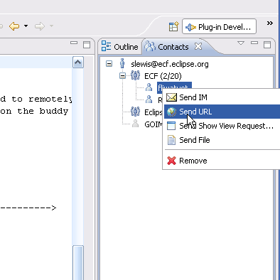
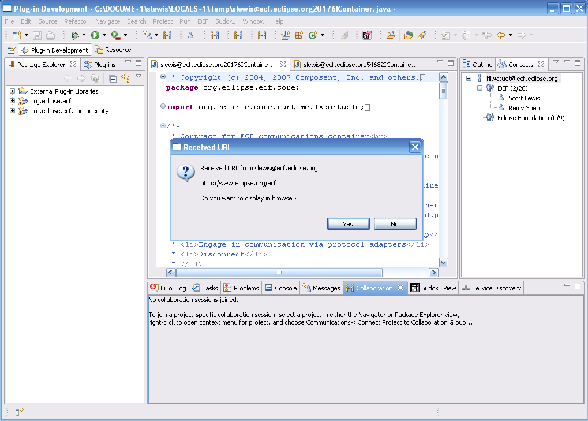
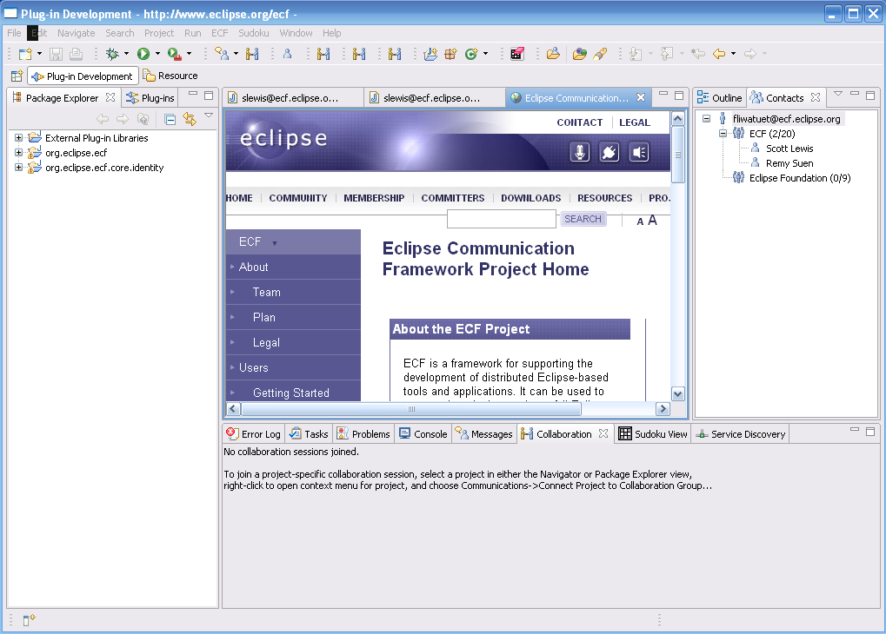

an eclipse technology project
New and Noteworthy
2.0.0 milestone 4a
Return to ECF download page
New and Noteworthy for 1.0.0
New and Noteworthy for 1.1.0
New and Noteworthy for 1.2.0

|
eclipse communication framework
an eclipse technology project New and Noteworthy 2.0.0 milestone 4a Return to ECF download page New and Noteworthy for 1.0.0 New and Noteworthy for 1.1.0 New and Noteworthy for 1.2.0 |
|
|
Real-Time Shared Editing over XMPP/Google Talk and Skype |
The ECF team is working on supporting several use cases based upon real-time shared editing. For example, online code reviews, collborative
debugging and testing, and distributed pair programming. We've just started this work, and there is now some 'signs-of-life' work
that works on the XMPP/Google Talk and Skype providers. See the page DocShare plugin wiki page
for usage instructions and screen shots. Please feel free to provide input/feedback about desired features at both the UI level and the
API level via the ECF mailing list |
|
URL and Eclipse View sharing |
It's now possible to immediately share URLs and to remotely open Eclipse views via ECF the XMPP/Google Talk and/or Skype providers.
To do so, open the context menu (right click) on the buddy of your choice in the contacts list:

Then the receiver will see a notification like this  And if they accept the request will then see  The 'Send Show View Request...' has a similar sequence. |
|
Linux Support for ECF Skype Provider |
The ECF Skype provider now supports Linux...bott 32-bit and 64-bit installations. See the OSU OSL Site to install.
|
| |
|
ECF API Changes |
|
|
Discovery API |
The discovery API has been simplified and extended. See bug #209774 and the
ECF Discovery API documentation.
IMPORTANT NOTE:The discovery API has undergone a number of simplifications that make it easier to use, but have broken backward compatibility. Applications that have been written to a previous version of the discovery API will have to be changed to use the new API. See the IDiscoveryContainerAdapter class for more information. |
FileTransfer API |
Added support improvided simplified outgoing file transfer. Added new provider for SCP-based file retrieve (download)
and file send (upload). See documentation for ECF File Transfer API.
|